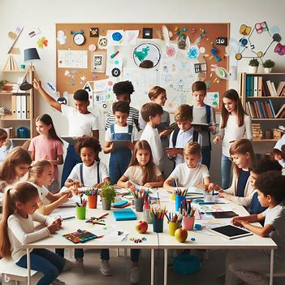

EDUCACION INCLUSIVA
Definicion
Para garantizar una educación de calidad es importante que todo los niños, niñas y adolescentes
participen en las actividades de aprendizaje, y hablando de esto hay que garantizar que todos los niños
tengan acceso garantizado a la educación, ya que esto es un derecho fundamental que debemos de tener todos los humanos,
la educación hace un papel fundamental en las personas que vamos a hacer el día de mañana.
Pero hablando de esto no solo es que se vaya a tener preferencia a las personas con discapacidad,
sino a todos alumnos a enseñar en general sin importar la raza, condición social, estrato ,genero, religión etc.

Video de retroalimentacion
pagina web 1
pagina web 2
pagina web 3